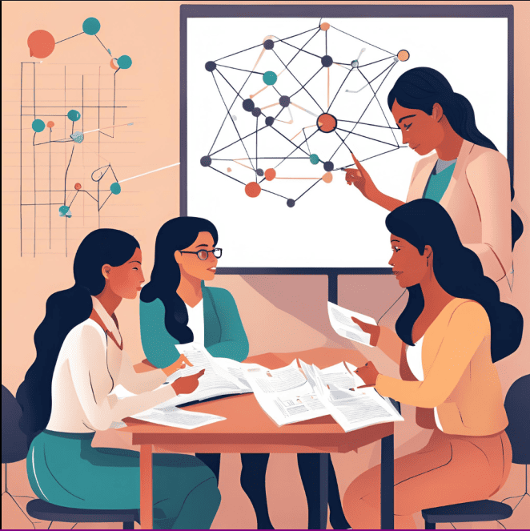

1. Objetivo
El objetivo de este proyecto es desarrollar un recurso completo e interactivo para el aprendizaje de la teoría de grafos, con el propósito
de abordar la falta de material unificado que facilite tanto la comprensión teórica como la aplicación práctica de los conceptos. Este recurso
está diseñado para estudiantes de ingeniería, en especial aquellos interesados en áreas como informática, telecomunicaciones y ciencias
computacionales, donde la teoría de grafos y sus algoritmos son esenciales.
El proyecto se estructura en torno a los siguientes componentes:
- Documentación Temática:
Una cobertura completa de temas relevantes, que abarca desde fundamentos de grafos hasta
conceptos avanzados como recorridos, algoritmos y propiedades específicas de los grafos.
- Software de Visualización y Manipulación:
Herramientas interactivas que permiten a los estudiantes visualizar
estructuras de grafos, explorar algoritmos de búsqueda y optimización, y analizar estructuras discretas en tiempo real.
- Ejemplos y Ejercicios Prácticos:
Ejemplos resueltos y problemas prácticos que reflejan situaciones del mundo real,
como redes de comunicación y optimización de rutas, que permiten a los estudiantes aplicar sus conocimientos.
- Cuestionarios y Evaluación:
Cuestionarios interactivos diseñados para evaluar la comprensión de los temas y
reforzar el aprendizaje, brindando retroalimentación y guía para fortalecer áreas de mejora.
Este tutorial tiene como fin capacitar a los estudiantes para abordar problemas de lógica y optimización mediante el uso de grafos,
mejorando así sus habilidades en el análisis y resolución de problemas. Los requerimientos del sistema incluyen un navegador compatible,
acceso a internet para actualizaciones y herramientas de visualización gráfica integradas. Al final de este curso, los estudiantes serán
capaces de entender y aplicar de forma autónoma los conceptos fundamentales y avanzados de la teoría de grafos en contextos aplicados
y académicos.
__________________________________________________________________________
Nota: Este tutorial es un proyecto de la materia de Estructuras Discretas del 2024.
